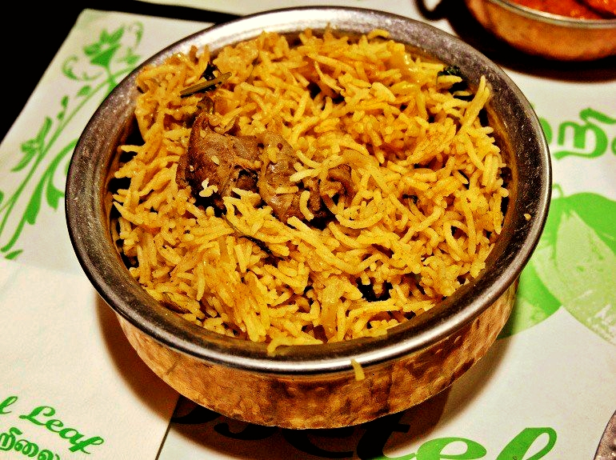
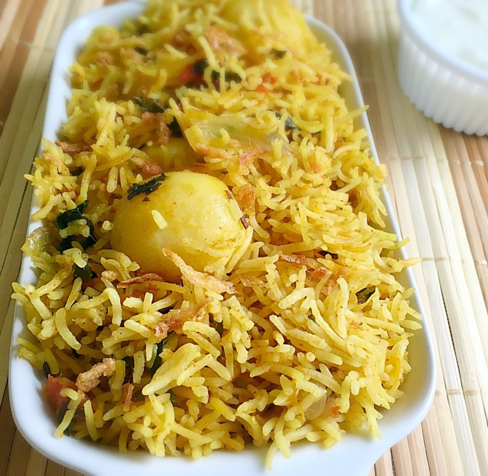

Authentic South African Briyani
by The Kombuis Docter

Based on South Indian flavour, this recipe entices and compliments the South African pallet to it's extremes.
Follow The Kombuis Docter's specialised prescription and prepare to heal your soul through your stomach!
So, whithout further delay - let's get into it!
Ingredients
- 4 cups basmati rice
- 3 tablespoons Ginger & garlic paste
- 5 green chilies (or less, depending on taste)
- 1 onion finely chopped
- 2 tomato finely chopped
- 2 teaspoons ea. cinnamon, cloves, cardamom
- Cashew nuts
- 4 tablespoons oil or ghee
- 2 cups carrot, peas, & finely cut beans
- 2 teaspoons Garam Masala powder
- 3 teaspoons chili powder (or less, depending on taste)
- Mint leaves & coriander leaves (handful)
- Juice of ½ lemon
Just a word of advice:
If you do find some of the ingredients hard to come by, it's more than fine if you substitute them with Ingredients
of similar quality.
GIVE IT YOUR ALL!
Directions
-
Wash the basmati rice. Before you begin cooking, you need to wash the rice. Fill a large bowl with cold water and pour in the rice.
Use your hand to stir the rice in one direction. The water should get cloudy, so pour off the cloudy water. Refill the bowl with water.
Continue rinsing the rice until the water is clear. Washing the rice removes surface starches and any debris.
-
Soak the rice. After you have you rinsed the rice, soak it. Place the rice in a bowl of cold water and let it soak for 30 minutes to 2 hours.
Soaking the rice helps the grains expand and be fluffy. You can soak the rice in the water you plan on boiling it in.
If you do this, then the amount of water you need to use is 1.25 times the amount of rice. For 2 cups of rice, use 2 1/2 cups of water.
-
Chop the vegetables. If you are adding mixed vegetables, such as carrots, beans, tomatoes, cauliflower, or peas, cut them into smaller pieces.
Make sure you wash the vegetables and set them aside, ready to be added to your rice.
-
Heat oil in a pan over medium heat. Add the cloves, cardamom, and cinnamon to the pan. Sauté for a few seconds, then add onions.
Sauté until the onions turn transparent. Add tomatoes and cashew nuts after the onions turn translucent.
-
Add mint leaves, coriander leaves, and green chilies to the pan. Stir and Sauté for a minute or so. Then add the ginger and garlic paste.
Stir into the mixture in the pan, then Sauté for a couple of minutes.
-
Add garam masala, chili powder, carrots, peas and beans. Sauté for a few more minutes, stirring regularly.
-
Pour in 8 cups of water. After adding the water, add salt to taste. Stir everything together, then bring the mixture to a boil.
-
Add the rice. Pour the rice into the boiling water. Add the lemon juice. Cover the pot with a tight lid. Let the rice cook until done.
The rice is done when it is al dente, not mushy.
As you check the rice, refrain from stirring. This will break the rice grains.
Add more water to the pot if you believe the water level is getting too low. Recover the rice and continue letting it cook.
-
Serve. Once the rice has cooked, serve the biryani hot. Try serving the biryani rice with rich curries or other delectable Indian main courses.



So, here's the thing:
A Briyani recipe is as diverse as it gets. There are a variety to choose from. However, what I have shown is my own personal preferance,
so I don't want you to feel discouraged to try and experiment on different recipes.
Every meal should be a new experience, so I emplore you to get your creative juices flowing!
What I Learned
- It's always possible to do new things. All that is required is some focus.
- No problem is too big that cannot be overcome. It just needs patience.
- Focus on thhe problem at hand and avoid being distracted unnecessarily.
From me, The Kombuis Docter:
"Your lekker dite is only a recipe away!"